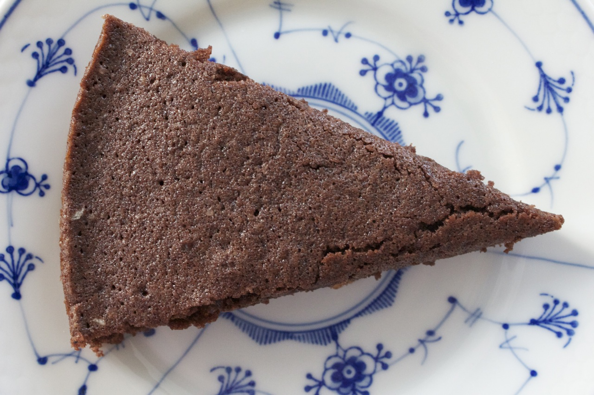

VAR DER NOGEN DER SAGDE KLISTERKAGE?
DET TROR JEG VIST NOK, SÅ NU SKAL DER BAGES!

Ingredienser:
- 100 g smør eller margarine
- 2 æg
- 2 dl rørsukker
- 2½ dl hvedemel
- 5 spsk. kakao
- 1½ tsk. vaniljesukker
- ½ knivspids salt
Fremgangsmåde:
- Smør en springform og drys den med rasp.
- Smelt smørret på lavt blus.
- Pisk æg og sukker luftigt, og tilsæt smørret.
- Bland mel, kakao, vaniljesukker og salt, og rør blandingen i æggemassen.
- Rør forsigtigt evt. klumper ud.
- Hæld dejen i formen og bag kagen i ca. 20 min. ved 200 °C.
- Serveres kold.
Tryk her for at komme tilbage til Emils Profil